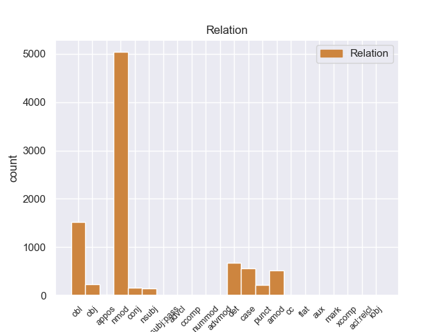
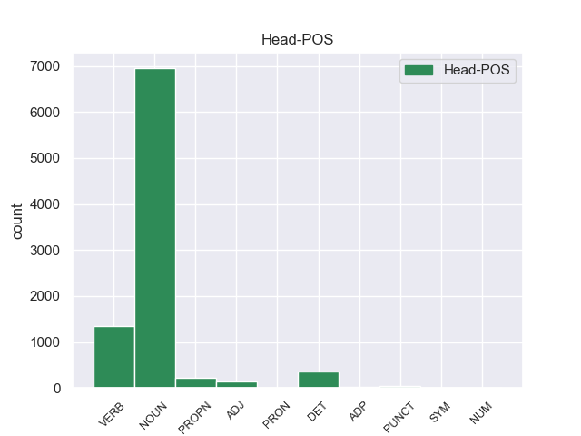
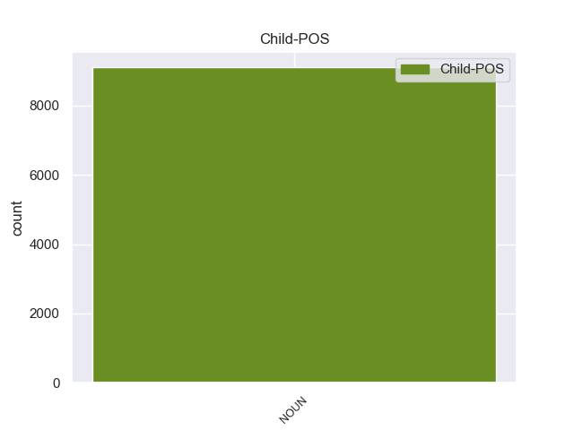

Distribution of features within this leaf



Agreement Rules sorted by frequency.
When the dependent token is None
1 En _ _ _ _ 0 _ _ _
2 1991 _ _ _ _ 0 _ _ _
3 , _ _ _ _ 0 _ _ _
4 como _ _ _ _ 0 _ _ _
5 ya _ _ _ _ 0 _ _ _
6 está _ _ _ _ 0 _ _ _
7 indicado _ _ _ _ 0 _ _ _
8 en _ _ _ _ 0 _ _ _
9 el _ _ _ _ 0 _ _ _
10 párrafo _ _ _ _ 0 _ _ _
11 anterior _ _ _ _ 0 _ _ _
12 , _ _ _ _ 0 _ _ _
13 se _ _ _ _ 0 _ _ _
14 creó _ _ _ _ 0 _ _ _
15 un _ _ _ _ 0 _ _ _
16 equipo equipo NOUN _ Gender=Masc|Number=Sing 0 _ _ _
17 ad _ _ _ _ 0 _ _ _
18 hoc _ _ _ _ 0 _ _ _
19 para _ _ _ _ 0 _ _ _
20 averiguar _ _ _ _ 0 _ _ _
21 como _ _ _ _ 0 _ _ _
22 se _ _ _ _ 0 _ _ _
23 podía _ _ _ _ 0 _ _ _
24 desarrollar _ _ _ _ 0 _ _ _
25 el _ _ _ _ 0 _ _ _
26 Dialogo dialogo NOUN _ Gender=Masc|Number=Sing 16 nmod _ _
27 Social _ _ _ _ 0 _ _ _
28 , _ _ _ _ 0 _ _ _
29 este _ _ _ _ 0 _ _ _
30 equipo _ _ _ _ 0 _ _ _
31 estaba _ _ _ _ 0 _ _ _
32 formado _ _ _ _ 0 _ _ _
33 por _ _ _ _ 0 _ _ _
34 representantes _ _ _ _ 0 _ _ _
35 de _ _ _ _ 0 _ _ _
36 todas _ _ _ _ 0 _ _ _
37 las _ _ _ _ 0 _ _ _
38 organizaciones _ _ _ _ 0 _ _ _
39 relacionadas _ _ _ _ 0 _ _ _
40 con _ _ _ _ 0 _ _ _
41 CES _ _ _ _ 0 _ _ _
42 , _ _ _ _ 0 _ _ _
43 UNICE _ _ _ _ 0 _ _ _
44 y _ _ _ _ 0 _ _ _
45 CEEP _ _ _ _ 0 _ _ _
46 ; _ _ _ _ 0 _ _ _
Disagree Examples:
1 En _ _ _ _ 0 _ _ _
2 los _ _ _ _ 0 _ _ _
3 campos campo NOUN _ Gender=Masc|Number=Plur 5 obl _ _
4 es _ _ _ _ 0 _ _ _
5 pitado pitar VERB _ Gender=Masc|Number=Sing|VerbForm=Part 0 _ _ _
6 , _ _ _ _ 0 _ _ _
7 odiado _ _ _ _ 0 _ _ _
8 y _ _ _ _ 0 _ _ _
9 también _ _ _ _ 0 _ _ _
10 le _ _ _ _ 0 _ _ _
11 quieren _ _ _ _ 0 _ _ _
12 mucho _ _ _ _ 0 _ _ _
13 , _ _ _ _ 0 _ _ _
14 sobre _ _ _ _ 0 _ _ _
15 todo _ _ _ _ 0 _ _ _
16 en _ _ _ _ 0 _ _ _
17 el _ _ _ _ 0 _ _ _
18 Santiago _ _ _ _ 0 _ _ _
19 Bernabéu _ _ _ _ 0 _ _ _
20 , _ _ _ _ 0 _ _ _
21 campo _ _ _ _ 0 _ _ _
22 donde _ _ _ _ 0 _ _ _
23 juega _ _ _ _ 0 _ _ _
24 partido _ _ _ _ 0 _ _ _
25 sí _ _ _ _ 0 _ _ _
26 partido _ _ _ _ 0 _ _ _
27 no _ _ _ _ 0 _ _ _
28 . _ _ _ _ 0 _ _ _
1 Ninguna ninguno PROPN _ Gender=Fem|Number=Sing 0 _ _ _
2 de _ _ _ _ 0 _ _ _
3 las _ _ _ _ 0 _ _ _
4 estructuras estructura NOUN _ Gender=Fem|Number=Plur 1 nmod _ _
5 federales _ _ _ _ 0 _ _ _
6 ( _ _ _ _ 0 _ _ _
7 departamentos _ _ _ _ 0 _ _ _
8 y _ _ _ _ 0 _ _ _
9 agencias _ _ _ _ 0 _ _ _
10 ) _ _ _ _ 0 _ _ _
11 puede _ _ _ _ 0 _ _ _
12 influir _ _ _ _ 0 _ _ _
13 en _ _ _ _ 0 _ _ _
14 esta _ _ _ _ 0 _ _ _
15 elección _ _ _ _ 0 _ _ _
16 , _ _ _ _ 0 _ _ _
17 ya _ _ _ _ 0 _ _ _
18 que _ _ _ _ 0 _ _ _
19 no _ _ _ _ 0 _ _ _
20 existe _ _ _ _ 0 _ _ _
21 ninguna _ _ _ _ 0 _ _ _
22 tradición _ _ _ _ 0 _ _ _
23 de _ _ _ _ 0 _ _ _
24 nominación _ _ _ _ 0 _ _ _
25 en _ _ _ _ 0 _ _ _
26 este _ _ _ _ 0 _ _ _
27 tema _ _ _ _ 0 _ _ _
28 . _ _ _ _ 0 _ _ _
1 Las _ _ _ _ 0 _ _ _
2 pequeñas _ _ _ _ 0 _ _ _
3 flores _ _ _ _ 0 _ _ _
4 se _ _ _ _ 0 _ _ _
5 encuentran _ _ _ _ 0 _ _ _
6 en _ _ _ _ 0 _ _ _
7 racimos _ _ _ _ 0 _ _ _
8 o _ _ _ _ 0 _ _ _
9 solitarias _ _ _ _ 0 _ _ _
10 en _ _ _ _ 0 _ _ _
11 tallos _ _ _ _ 0 _ _ _
12 terminales _ _ _ _ 0 _ _ _
13 , _ _ _ _ 0 _ _ _
14 son ser VERB _ Mood=Ind|Number=Plur|Person=3|Tense=Pres|VerbForm=Fin 0 _ _ _
15 de _ _ _ _ 0 _ _ _
16 color color NOUN _ Gender=Masc|Number=Sing 14 obl _ _
17 blanco _ _ _ _ 0 _ _ _
18 , _ _ _ _ 0 _ _ _
19 azul _ _ _ _ 0 _ _ _
20 , _ _ _ _ 0 _ _ _
21 lavanda _ _ _ _ 0 _ _ _
22 , _ _ _ _ 0 _ _ _
23 púrpura _ _ _ _ 0 _ _ _
24 o _ _ _ _ 0 _ _ _
25 azul _ _ _ _ 0 _ _ _
26 - _ _ _ _ 0 _ _ _
27 violeta _ _ _ _ 0 _ _ _
28 . _ _ _ _ 0 _ _ _
1 El _ _ _ _ 0 _ _ _
2 castillo _ _ _ _ 0 _ _ _
3 de _ _ _ _ 0 _ _ _
4 Oropesa _ _ _ _ 0 _ _ _
5 data datar VERB _ Mood=Ind|Number=Sing|Person=3|Tense=Pres|VerbForm=Fin 0 _ _ _
6 de _ _ _ _ 0 _ _ _
7 los _ _ _ _ 0 _ _ _
8 siglos siglo NOUN _ Gender=Masc|Number=Plur 5 obl _ _
9 XII _ _ _ _ 0 _ _ _
10 y _ _ _ _ 0 _ _ _
11 XIII _ _ _ _ 0 _ _ _
12 , _ _ _ _ 0 _ _ _
13 y _ _ _ _ 0 _ _ _
14 fue _ _ _ _ 0 _ _ _
15 construido _ _ _ _ 0 _ _ _
16 por _ _ _ _ 0 _ _ _
17 los _ _ _ _ 0 _ _ _
18 árabes _ _ _ _ 0 _ _ _
19 probablemente _ _ _ _ 0 _ _ _
20 sobre _ _ _ _ 0 _ _ _
21 una _ _ _ _ 0 _ _ _
22 construcción _ _ _ _ 0 _ _ _
23 romana _ _ _ _ 0 _ _ _
24 anterior _ _ _ _ 0 _ _ _
25 . _ _ _ _ 0 _ _ _
1 El _ _ _ _ 0 _ _ _
2 castillo _ _ _ _ 0 _ _ _
3 de _ _ _ _ 0 _ _ _
4 Oropesa _ _ _ _ 0 _ _ _
5 data _ _ _ _ 0 _ _ _
6 de _ _ _ _ 0 _ _ _
7 los _ _ _ _ 0 _ _ _
8 siglos _ _ _ _ 0 _ _ _
9 XII _ _ _ _ 0 _ _ _
10 y _ _ _ _ 0 _ _ _
11 XIII _ _ _ _ 0 _ _ _
12 , _ _ _ _ 0 _ _ _
13 y _ _ _ _ 0 _ _ _
14 fue _ _ _ _ 0 _ _ _
15 construido construir VERB _ Gender=Masc|Number=Sing|Tense=Past|VerbForm=Part 0 _ _ _
16 por _ _ _ _ 0 _ _ _
17 los _ _ _ _ 0 _ _ _
18 árabes árabe NOUN _ Number=Plur 15 obl _ _
19 probablemente _ _ _ _ 0 _ _ _
20 sobre _ _ _ _ 0 _ _ _
21 una _ _ _ _ 0 _ _ _
22 construcción _ _ _ _ 0 _ _ _
23 romana _ _ _ _ 0 _ _ _
24 anterior _ _ _ _ 0 _ _ _
25 . _ _ _ _ 0 _ _ _